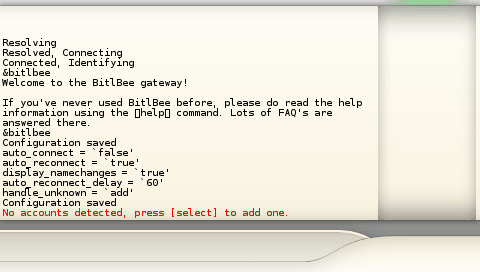

- Copy AFKIM onto your memory stick like with any PSP Homebrew. (How to install Homebrew on your PSP)
- Run AFKIM from the memory stick menu
- Choose the WIFI connection to connect to with up/down and X.
Once you have chosen one, wait for the WIFI to connect.
- Now you will need to create your bitlbee account. bitlbee is the service which AFKIM uses to connect to all of the chat networks.
The username and password you enter here will be saved to your PSP, you won't need to enter them again.
Enter your details using the danzeff keyboard, press digital-down (enter) to go to the next box, and again when you have entered your password to create the account.
You might need to try a few times to choose a username that isn't already taken.

-
AFKIM will now log you into bitlbee and connect to any of your chat accounts you have added. As you haven't added any yet, it will tell you that you need to add one. Press [SELECT] to pop up the menu.

- Once you press [SELECT] you will be presented with the main menu. From here you should choose 'Add Account' with up/down and X.
When in a menu, you can press [SELECT] to close the menu.
- Choose the account type to add. The next screen will vary slightly depending on the account type you choose.
- Enter your username and password for your MSN/ICQ/whatever account like you did to create your bitlbee account.
- You will be returned to the main afkim window, with any luck your account will connect and your buddy list will be filled with buddies. When your account is connected its icon will be colored, not connected accounts are shown in greyscale.
If your account cannot connect the reason will be shown in the main window, you should remove your account before adding it again.
Continue adding any other accounts you want to, then move on to How to use AFKIM.